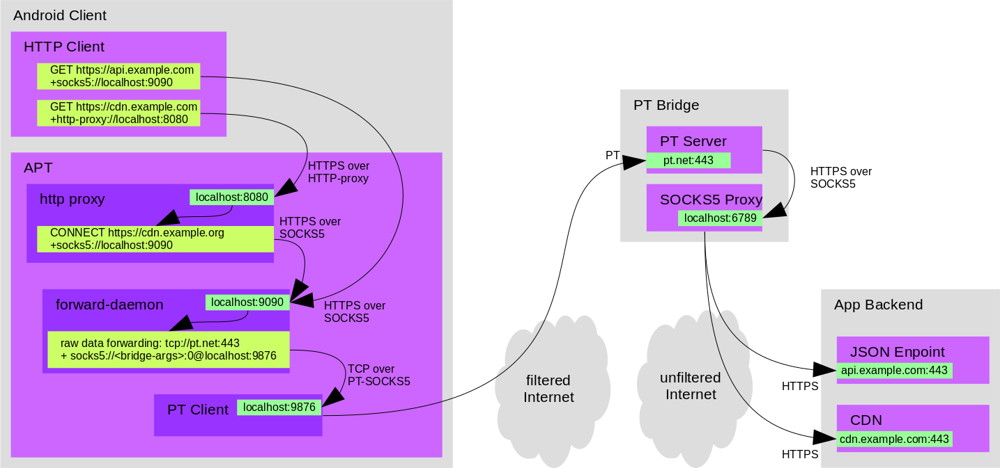
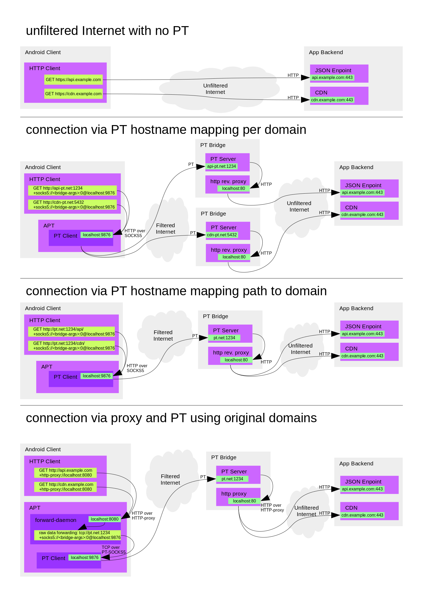

Pluggable Transports (PT) give software developers the means to establishing reliable connections in DPI-filtered network scenarios. A variety of techniques are supported, all available by implementing just one standard. We looked into how this can be put to work in Android Apps. Hence we crafted 3 fully functional PT-enabled prototype Apps based on well known open source projects.
All our prototypes rely on obfs4 which is a stable PT implementation widely deployed by Tor. Guardian Project published a library called AndroidPluggableTransports for giving Android developers access easy access to PT. Since we could not find any easily accessible sample code, we created a minimal demo project, illustrating a minimal setup for sending a HTTP-request through a OBFS4 connection.
Conceptually, a PT establishes point to point connections between a PT client and a PT server. PT servers are also known as “bridges”. Most app back-ends, on the other hand, consist of multiple services and third party APIs. We’re using SOCKS5 for multiplexing several connections over a single PT connection. A nice benefit to this approach is that client side integration looks similar to integrating Tor.
Every PT bridge generates an individual set of parameters. These are required for establishing connections to that bridge. In the context of Tor, these parameters are often referred to as a “bridge line”, which also implies a quasi-standardized formatting of these parameters.
Starting a PT connection involves several layers of proxying. This diagram should give you an idea of what’s really going on when we start a PT connection:

For many organizations it is not an option to run open proxies on the Internet because the bandwidth bills would be too large, or the security risks too high. This means we need to refine our SOCKS5 based approach a bit. An obvious solution is to restrict usage of a PT bridge for one specific app. This can be achieved simply by whitelisting outgoing connections on a bridge’s SOCKS5 server. Some SOCKS5 servers have built-in support for this, so we’re covered. We published the deployment script we’re using to set up our SOCKS5-enabled bridges in our prototype environment.
While SOCKS5 support is widespread these days, some apps might still need to rely on HTTP-proxying. That’s why we also included an embedded HTTP-proxy in our prototype Apps. This proxy is configured to transparently send requests through the SOCK5 connection, which in turn runs through a PT connection.
All that required from the app developer’s perspective is to configure APT (and our soon-to-be upstreamed proxy helper library) with a bridge line, then configure all network connections to use a either a SOCKS5 or HTTP proxy.
We also looked into ways for distributing parameters for PT connections. We started out by supporting bridge-lines as used in Tor browser and Orbot. Copy and pasting these is not very convenient and probably looks arcane to most users. So we came up with the idea of sharing bridge connection parameters as URLs. HTTP(S) URLs are clickable in most Android Apps which makes sharing a lot easier. Apps can subscribe to URL patterns. This way it’s possible to intercept clicks on PT bridge parameters and configure PT settings accordingly. While these URLs still look somewhat arcane, they hopefully enable an improved user experience.
Here’s an example of a bridge-line and how it looks like the in all URL formats:
Bridge obfs4 104.224.78.19:443 FD9DAEE45A2FDF70D462914A75ADE99A29957920 cert=LSOd9qOffpIFM4az+ueou7sY0eQRAsI/joW4QgCl/LSDo2ecQzAQHNu281oAivLDZuTQNA iat-mode=0
bridge://obfs4@104.224.78.19:443/FD9DAEE45A2FDF70D462914A75ADE99A29957920?cert=LSOd9qOffpIFM4az%2Bueou7sY0eQRAsI%2FjoW4QgCl/LSDo2ecQzAQHNu281oAivLDZuTQNA&iat-mode=0
http://bridge.onion/FD9DAEE45A2FDF70D462914A75ADE99A29957920?transport=obfs4&ip=104.224.78.19&port=443&cert=LSOd9qOffpIFM4az%2Bueou7sY0eQRAsI%2FjoW4QgCl/LSDo2ecQzAQHNu281oAivLDZuTQNA&iat-mode=0
https://bridges.torproject.org/FD9DAEE45A2FDF70D462914A75ADE99A29957920?transport=obfs4&ip=104.224.78.19&port=443&cert=LSOd9qOffpIFM4az%2Bueou7sY0eQRAsI%2FjoW4QgCl/LSDo2ecQzAQHNu281oAivLDZuTQNA&iat-mode=0
There’s still some room for refining this. Tor Browser, for example, will happily accept but fail using our experimental SOCKS5 bridges. Meanwhile our prototype apps will accept but fail to connect to Tor bridges. So it would make sense to explore what metadata apps need to decide whether they are capable of connecting to a specific bridge or not.
An important missing puzzle piece in this regard also is to make sure DNS queries can not get filtered. DNS-over-HTTPS (DoH) could be a suiteable mitigation. Further down the road, it certainly would make sense to look into sending DNS requests over pluggable transports too.
Many Android apps use WebView for transparently embedding web content.
Sadly, proxy support of WebView is not very developer friendly. We are
shipping a well-tested helper library with NetCipher to
ease this pain.
We also explored an alternative approach to control the networking of
Android’s WebView. It’s possible to replace all network requests
a WebView sends by overriding WebViewClient.shouldInterceptRequest().
This technique will work well for read-only (HTTP GET) connections. Sending
data (HTTP POST and PUT) is not feasible though. There is no interface,
either exposed or hidden, in Android’s API which would allow us to retrieve
a HTTP request’s body.
Finally here’s a list of alternative scenarios we came up with for using PT on Android. They are not as generic as the approach we chose to implement in the prototype Apps. In some situations these might be easier to implement, perform better or simply convey how PT can be put to use.
